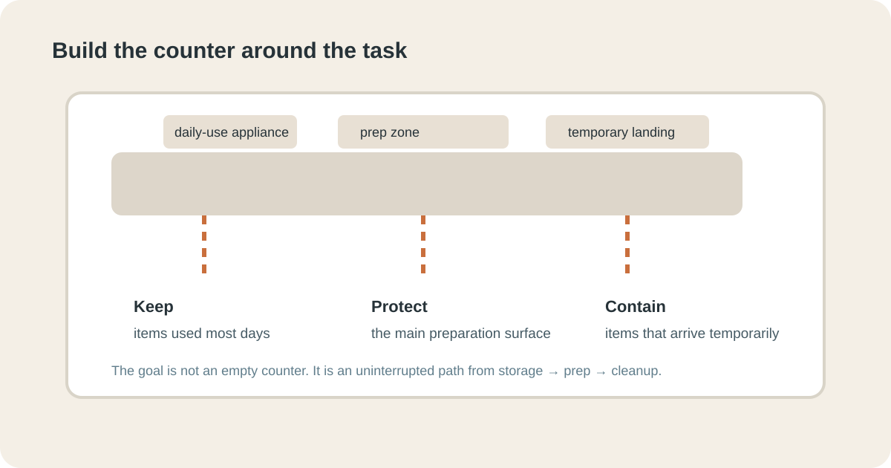
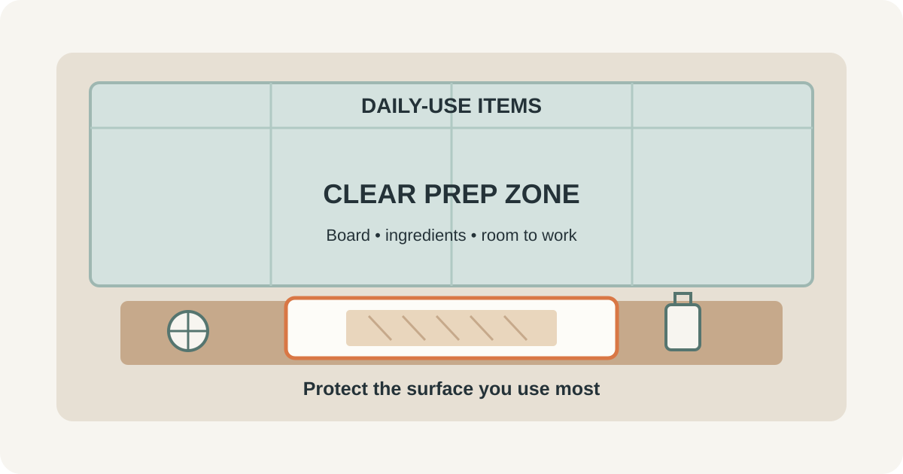
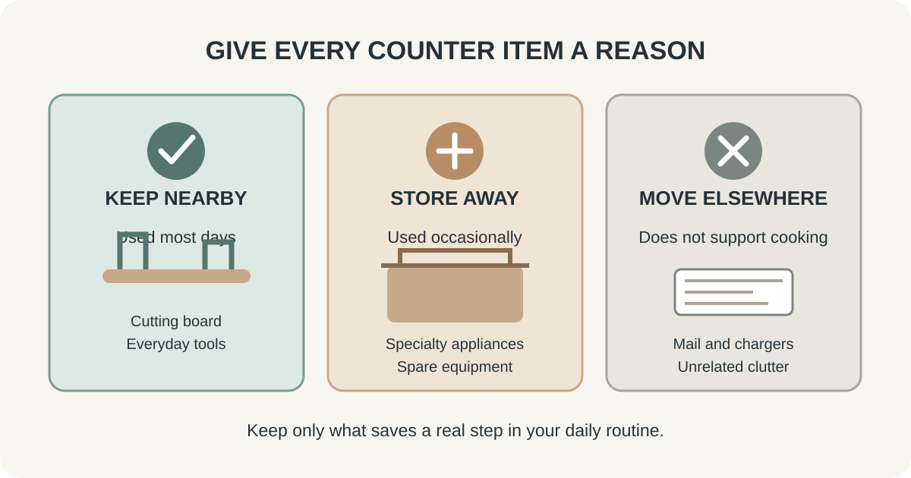
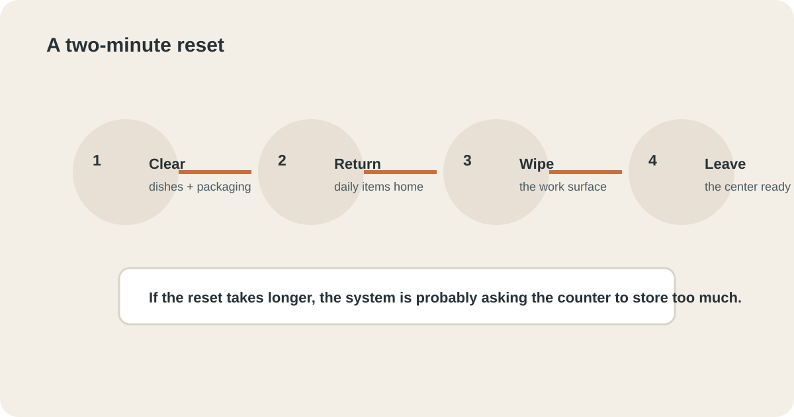

STORAGE & ORGANIZATION · KITCHEN
Kitchen Counter Zone That Stays Clear
If your kitchen counter becomes a parking lot for appliances, mail and cups, do not start by organizing everything. Pick one working zone and make it easy to clear: a defined preparation surface, fewer permanent residents and a two-minute reset.


Quick plan
| Time | About 30 minutes to set up, then a 2-minute reset each evening |
| Cost | Free. Buy storage only after the one-week test |
| Best for | Small and medium kitchens, renters and shared households |
| Goal | One clear preparation zone you can restore in two minutes |
Quick win (10 minutes)
- Pick the stretch of counter where you chop or prepare food most often.
- Move everything that is not used most days off that stretch into a box or onto the table. Do not sort yet.
- Put back only the items you can name a daily reason for.
- Leave the zone clear tonight. Tomorrow, notice what tries to land there first: that is your repeat offender (see section 10).
1. Choose one clear working zone
Do not aim for a perfect empty kitchen. Choose the section of counter where food is prepared most often (beside the sink, next to the stove or near the cutting board), so ingredients, a board and a knife can appear without first moving six unrelated objects. Measure success by speed: if the zone takes ten minutes to clear, the system is too difficult.

2. Give every permanent item a reason
For each object on the counter, ask: Do we use it most days? Does leaving it here save a meaningful step? Does it make the working surface harder to use? An item that fails the first two questions and creates friction belongs elsewhere. The answer depends on the household, not on a magazine rule. Both extremes fail: a counter covered with appliances, and a bare counter that makes you unpack the same tools every morning.
| Item | Counter or storage? |
|---|---|
| Used most days and saves a step (toaster, coffee maker) | Counter, outside the main preparation path |
| Used a few times a week | Nearby cabinet or shelf |
| Used a few times a month (waffle maker) | Storage, away from the active zone |
| Mail, papers, chargers | A different landing zone (section 8) |

3. Create a home for loose daily items
Clutter survives when an item has nowhere convenient to go: receipts, lunch containers, keys and reusable bottles become permanent residents when returning them means walking to three rooms. Give each recurring item one nearby destination: a small tray for receipts until they are processed, a basket for reusable bags, a cabinet shelf for lunch containers. The container is not the solution by itself; the predictable return point is.
4. Reduce duplicates before buying organizers
Before buying bins, inspect duplicates. Three sets of measuring cups, several travel mugs or multiple open packets of the same ingredient take more space than an organizer can recover. Keep the version that is easiest to use and remove the rest from the active zone: donate it, store it elsewhere, or keep it only for a real occasional purpose. Decluttering first makes every later decision easier.
5. Protect the main preparation path
Picture preparing a normal meal: where do ingredients arrive, where is the board, where does waste go, where do clean dishes wait? The clear zone should support that sequence. If the bin, drying rack or an appliance blocks it, test a new position for a week. Moving one object 6 inches (15 cm) can beat buying storage, because it removes repeated friction.
6. Use vertical space selectively
When counter space is limited, look above and below it: a wall rail, cabinet-door organizer or shelf can hold one small category, such as frequently used utensils, a few mugs or a paper towel roll. Be selective, because filling every wall with hooks just moves visual clutter upward. Keep rarely used items out of the active zone.
7. Make the two-minute reset obvious
A reset works when you know exactly what to do. Run through this list at the end of the day, and do not start reorganizing cabinets during the routine.
- Clear dishes and food packaging.
- Return the few permanent tools to their zones.
- Move loose objects to their defined homes.
- Wipe the main preparation surface.
- Leave the center clear for tomorrow.

The routine should feel almost boring. If it requires decisions every evening, it will be skipped.
8. Keep food and paperwork from competing for space
Counters become household administration desks: mail, school papers and delivery packaging compete with food preparation. Create a separate landing zone for paperwork, even a small wall pocket or tray outside the cooking area. Unopened groceries need a clear temporary destination too: put food away before starting another activity, so clutter does not just move from one surface to another.
9. Test the system during the busiest meal
A system that works on a quiet Sunday may fail on a rushed weekday. Test the zone when you are tired and preparing a normal meal, and notice what lands on the counter because the system is inconvenient. Those objects are evidence: either their home is too far away or the category needs a better container. Adjust the system around real behavior.
10. Fix the repeat offender instead of reorganizing everything
After three or four normal days, look for the first object that keeps returning to the counter. It is your best diagnostic clue.
| Repeat offender | What it usually means |
|---|---|
| A blender used every morning | Its permanent position may be justified |
| Unopened mail | The kitchen is missing a paperwork landing zone |
| A collection of chargers | The problem belongs to a different storage system |
Change one thing at a time: move the offender closer to its real home, add a small container only if it solves a specific problem, or remove the item from the active zone. Test the change for a week. A system earns its place by reducing repeated work, not by looking organized on day one.
11. Check food-preparation safety before optimizing appearance
A clear counter is useful only if it stays a safe food-preparation surface.
Safety first. Keep raw meat, poultry and seafood, and their juices, away from ready-to-eat food. Clean the work surface after handling them, and keep cleaning products and household chemicals away from where food is prepared.
The U.S. Department of Agriculture's food-safety guidance is a useful reference for arranging and cleaning a food-preparation zone: USDA safe food handling guidance. Organization should make safe preparation easier, not just make the counter look empty.
After one week, check the zone during your busiest meal. If you can put ingredients down, work comfortably, clean up and leave the center ready for tomorrow without moving unrelated objects, stop there instead of organizing for organization’s sake.
What not to buy yet
- Drawer or cabinet organizers. Wait until the one-week test shows which category keeps spilling over.
- Tiered counter racks and extra canisters. They add volume to the surface you are trying to clear. Try moving or storing the item first.
- A matching container set. Measure the shelf and count the items first, or the set will not fit.
Common mistakes that make counter clutter return
- Buying containers before identifying the repeat offender.
- Keeping every appliance visible because it was expensive.
- Using the counter as a permanent mail office.
- Creating several small “temporary” piles.
- Putting daily-use objects in storage that is technically correct but inconvenient.
- Trying to reset the entire kitchen instead of protecting one useful work zone.
- Adding more storage when the real problem is excess volume.
Frequently Asked Questions
How do I keep my kitchen counters clutter-free?
Give daily-use items a defined zone, remove duplicates, contain loose objects and make the reset shorter than the habit of leaving things out.
What should stay on a kitchen counter?
Keep only items used frequently enough to justify their space and that do not make food preparation harder.
How do I declutter a small kitchen counter?
Start with one working zone, remove rarely used items and move appliances or supplies that interrupt the main preparation path.
Why does my kitchen counter get cluttered again so quickly?
Usually because items lack a convenient home or the surface is being asked to store too many unrelated categories.
How often should I reset the kitchen counter?
A short daily reset is usually easier than a large weekly clear-out, especially when every frequent item has a simple return location.
Where should small appliances live if the counter is tiny?
Keep the appliance you use most often accessible if moving it creates daily friction. Store less frequent appliances in the easiest cabinet or shelf that fits them, and avoid sacrificing the main preparation zone simply to keep every appliance visible.
A clear kitchen counter is not a permanent state of emptiness. It is a working surface that has fewer competing jobs, obvious homes for daily items and a reset that takes minutes rather than an entire weekend.
Keep going
- Quiet Entryway Storage
- Simple Home Reset That Prevents Weekend Chaos
- Reduce Cable Clutter: A Simple System That Stays Serviceable